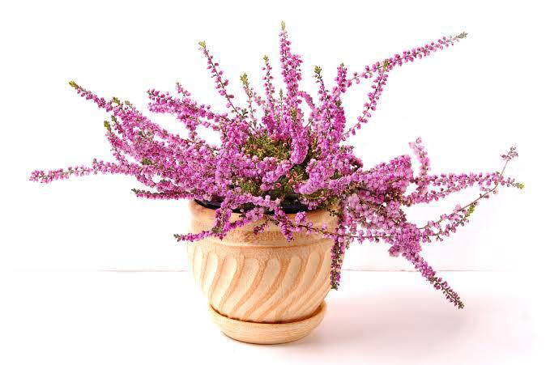

Sejarah

Bunga heather (dalam bahasa Latin disebut Calluna vulgaris) adalah tanaman berbunga yang berasal dari Eropa dan sebagian Asia.
Heather tumbuh subur di daerah beriklim dingin dan memiliki karakteristik khas berupa bunga kecil berwarna ungu, merah muda, atau putih.
Tanaman ini juga sangat tahan terhadap cuaca dingin dan sering ditemukan di padang rumput, pegunungan, dan rawa-rawa di Eropa utara, terutama di Inggris, Skotlandia, dan Irlandia.
Asal Usul Penyebaran

Heather telah dikenal dan digunakan sejak ribuan tahun yang lalu oleh masyarakat Eropa.
Heather memiliki peran penting dalam budaya masyarakat Skotlandia dan Inggris.
Skotlandia, khususnya, memiliki hubungan erat dengan tanaman ini, hingga heather sering dianggap sebagai salah satu simbol
negara tersebut. Heather liar ditemukan di area pegunungan dan padang rumput yang luas di dataran tinggi Skotlandia, menjadikannya bagian dari
lanskap alami Skotlandia yang khas.
Pengguna Tradisional

Heather dulu sering digunakan sebagai bahan dasar dalam pembuatan atap rumah, sapu, keranjang, dan bahkan tempat tidur karena
batangnya yang kuat dan tahan lama. Daunnya yang tebal dan rimbun juga membuatnya ideal sebagai bahan bakar dan bahan untuk
membuat minuman herbal. Di beberapa wilayah, bunga heather juga dipakai sebagai bahan dalam pembuatan bir tradisional.
Simbolisme dan Makna Budaya

Heather sering dikaitkan dengan keberuntungan, perlindungan, dan keberanian. Dalam tradisi Skotlandia, bunga heather putih
dianggap membawa keberuntungan dan sering dihubungkan dengan kisah cinta dan kesetiaan. Heather juga melambangkan ketahanan
karena kemampuannya bertahan di lingkungan yang keras.
Penggunaan Modern

Saat ini, heather sering digunakan sebagai tanaman hias karena keindahan bunga dan dedaunannya yang hijau lebat.
Heather juga populer di taman-taman dan sebagai tanaman penutup tanah karena sifatnya yang mudah beradaptasi.